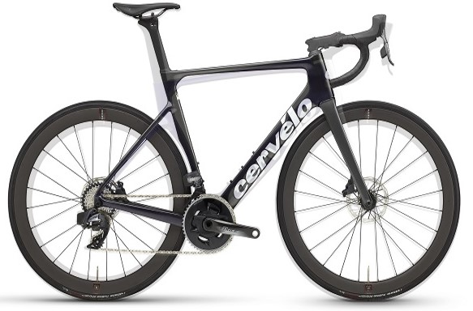
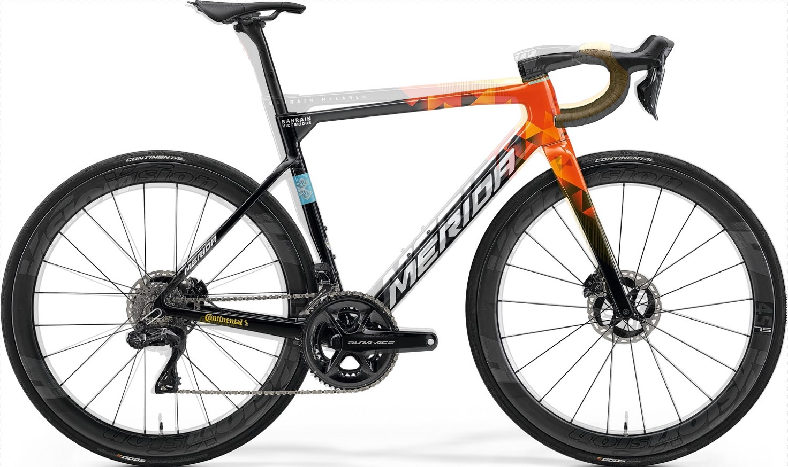
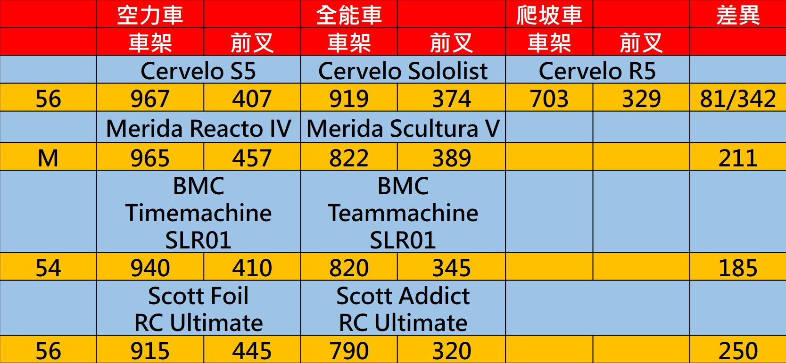
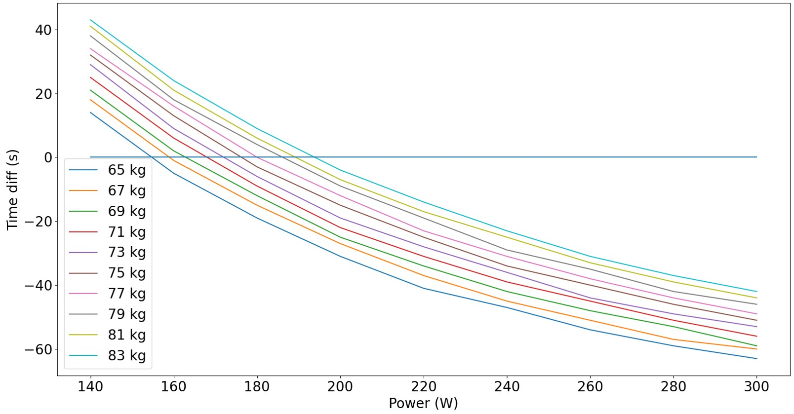
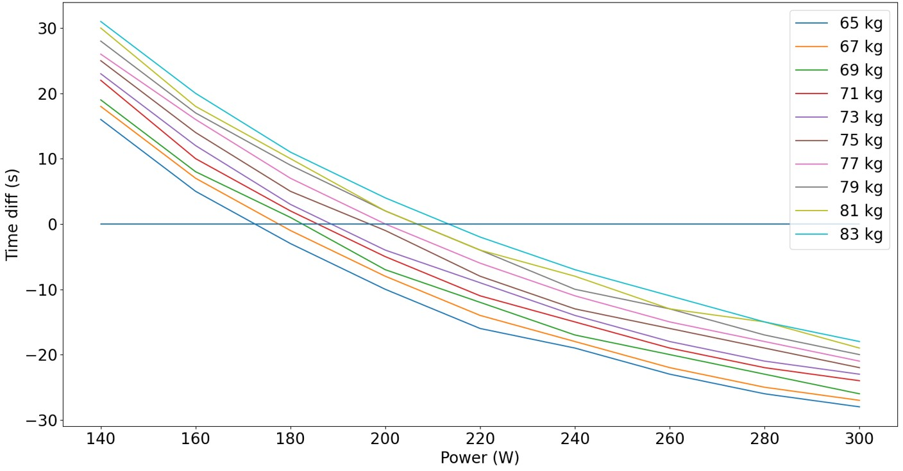
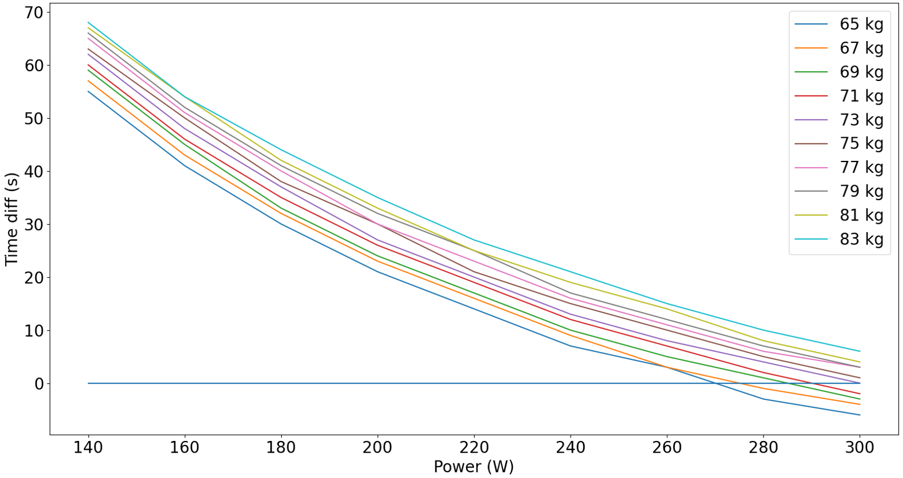

空力車全能車爬坡車哪台騎比較快 理論模擬告訴你
以前總是有許多的文章在討論要空力車還是爬坡車，而大多數的廠商也是兩種車都出，當然也是有少數如 PINARELLO 只有一種車，現在則是越來越多車廠有出全能車，甚至指出全能車不再分空力跟爬坡，那麼我們來看一下空力車架與全能車架的差異。
我們先來看 Cervelo 的空力車與全能車，把 S5 跟 Soloist 兩張圖疊在一起可以發現，就形狀上看起來幾乎是一樣的，也可以看到後叉下移的位置跟空力車一樣，只差在空力車架側面看起來比較粗壯，而全能車的管型則是採用 D 型管，所以側面看起來跟爬坡車差異不大，主要來說就是車架形狀跟空力車一樣，車架管型比較貼近爬坡車。
|  |
|---|
| 圖一：S5 與 Sololist |
就性能方面 Cervelo 的官方說法則是，Soloist 大概比 S5 輕 250 g，也大概比 R5 重 250 g，空力則是比 S5 慢 190 g，而比 R5 快 126 g，這個空力單位可以去看頻道中另一部影片，有介紹一些空力表示法跟怎麼來的，當然空力減少多少一般人比較難去驗證，即便是用電腦跑模擬都是用商用軟體，而且通常也要跑很久，所以相較於重量大家很難有感覺，明顯之所以叫全能車，就是介於兩者之間，可以想成從蹺蹺板的兩端往中間走。
當然幾乎所有強調空力的車架側面看起來都很粗壯，就跟每個型狀的流體力學性質有關，主要就是如何讓空氣順順的流過車架而不減速，詳細的說明可以去看頻道中另一部影片。那麼來看一下美利達的空力車與全能車，全能車是由 Scultura 改過來的，原本的 Scultura 定位是爬坡車，現在技術進步爬坡車要低於 6.8 kg 易如反掌，可是三大賽的車又有 UCI 的規定，所以從爬坡車改過來也是滿合理的，可以看到就車架型狀來看兩車幾乎一樣，而車架管型則是空力車比較壯 跟 Cervelo 一樣，性能方面美利達的官方說法則是，在時速 45 配 60 板高的情況下，Scultura V 所需瓦數是 224.5 W，而 Reacto IV 所需瓦數是 217.7 W，但是能不能達到這個速度及維持多久是另一件事，現在的頂級 Scultura 大概是 6.95 kg 左右，非常接近 UCI 所訂出的下限，而相同配件的 Reacto IV 大概是 7.4~7.5 kg 左右。
|  |
|---|
| 圖二：Reacto 與 Scultura |
那麼這邊整理了一些空力車與全能車，的叉架和前叉重量級兩車種重量差異，一般來說車廠大概都是給車架跟前叉重量，但實際上空力車座管通常是特規的，而且相同材質下也依定比原管或 D 型管重，當然像 S5 的把手也只能給 S5 用，但是 Reacto 與 Scultura 都可以裝同一種把手，所以其實整體差異還包刮了座管與把手，所以雖然相同尺寸的 Reacto 與 Scultura，車架與前叉重量只差 211 g，但是相同變速套件與輪組配下來，兩者重量差還是會來到 400 g 左右。
|  |
|---|
| 圖三：一些車架與前叉的重量 |
那麼我們這邊就來做一些假設，然後輸入這些參數來看看，在碧綠神木盃跟西進武嶺時間會差多少。假設只有車架 前叉跟座管有差外其餘都一樣，空力車較全能車重 300~400 g，空力車較爬坡車重 600 g，空力車風阻面積較全能車小 4%，較爬坡車小 8%，全程做個人計時，不煞車，當然每家的差異都越有不同，但是也不會離這些數字太遠。這邊的計算是利用數值建模的方式，寫下微分方程然後使用，Runge-Kutta 4th order 做計算。
先來看空力車與爬坡車在碧綠神木盃的差異，這邊的總重就是人+車+裝備等所有重量，圖中的每條線代表在總重是某個值得情況下，不同瓦數去該路段空力車與爬坡車的時間差，用空力車所花時間 – 爬坡車所花時間，若時間差為負則空力車較快 反之爬坡車較快，所以可以看到在前面的假設下，若是整個路段能夠維持均瓦 200 以上，那麼空力車的速度是會快過爬坡車的，當然在不同重量下所需要的瓦數不同，所以這邊把差異最接近的瓦數找出來，就可以知道當總重越小，兩者時間差越小時所需的瓦數就越小，所以如果本身瓦數夠大那建議選空力車。
| 總重 kg | 65 | 67 | 69 | 71 | 73 | 75 | 77 | 79 | 81 | 83 |
|---|---|---|---|---|---|---|---|---|---|---|
| 均瓦 W | 160 | 160 | 160 | 160 | 180 | 180 | 180 | 180 | 200 | 200 |
| 差異 s | -5 | -1 | 2 | 6 | -6 | -3 | 0 | 4 | 6 | -4 |
|  |
|---|
| 圖四：太魯閣牌樓到碧綠神木 – 空力車與爬坡車 |
那麼再來看空力車與全能車的差異，可以看到當總重差為 300 g 時，若是整個路段能夠維持均瓦 220 以上，那麼空力車的速度是會快過爬坡車的，因為重量差跟風阻差都變小了，所以要更大的瓦數才能體現出差異，若是總重差為 400 g 時瓦數又要更大。
| 總重 kg | 65 | 67 | 69 | 71 | 73 | 75 | 77 | 79 | 81 | 83 |
|---|---|---|---|---|---|---|---|---|---|---|
| 均瓦 W | 180 | 180 | 180 | 180 | 180 | 200 | 200 | 200 | 200 | 200 |
| 差異 s | -3 | -1 | 1 | 2 | 3 | -1 | 0 | 2 | 2 | -2 |
|  |
|---|
| 圖五：太魯閣牌樓到碧綠神木 – 空力車與全能車 |
而路線換成是西進武嶺的話，因為坡度比較陡 所以需要的瓦數又會更大，如果重量差 300 g 的話，整段均瓦至少要 240 W 以上空力車才會較快，如果重量差 400 g 的話則是要 280 W。
| 總重 kg | 65 | 67 | 69 | 71 | 73 | 75 |
|---|---|---|---|---|---|---|
| 均瓦 W | 280 | 280 | 280 | 300 | 300 | 300 |
| 差異 s | -3 | -1 | 1 | -2 | 0 | 1 |
|  |
|---|
| 圖六：太魯閣牌樓到碧綠神木 – 空力車與全能車 |
所以全能車主要是空力的車架配上 D 型管，若只有車架、前叉跟座管有差，以爬坡來看，瓦數大的人選空力車或是全能車，好過較輕的爬坡車 瓦數小的人則是選輕的就對了，當然實際狀況如何還是得根據實際參數計算，所以實際上爬坡時較輕的低框爬坡輪，也不一定會好過高框的板輪，還要看本身的體重跟瓦數決定，全能車確實給了市民組的車手一個好的選擇，而 UCI 卡個重量 6.8 kg 的下限在那邊，未來的爬坡車滿有可能被全能車取代的，空力車則因為 UCI 規則能夠再有變化。